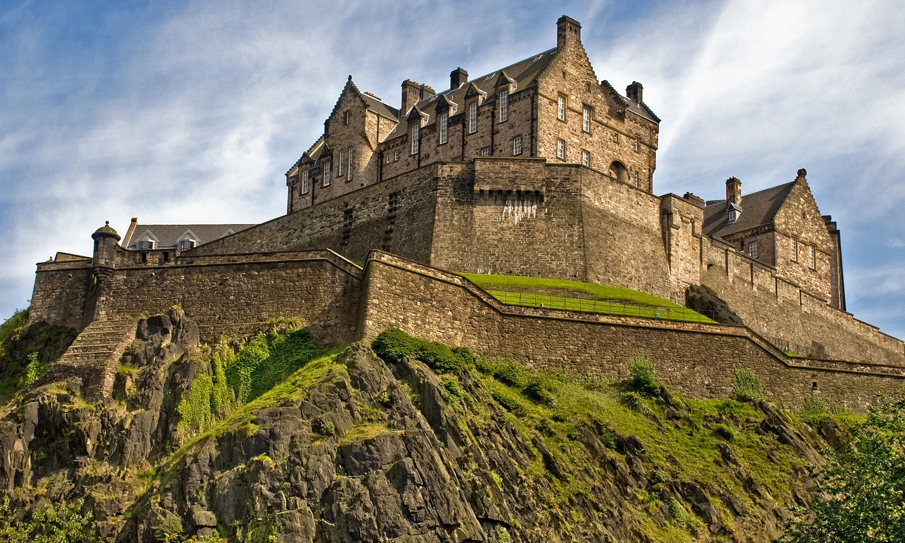

Edinburgh Castle
Edinburgh Castle (Scottish Gaelic: Caisteal Dhùn Èideann) is a historic castle in Edinburgh, Scotland. It stands on Castle Rock, which has been occupied by humans since at least the Iron Age.The castle, in the care of Historic Environment Scotland, is Scotland's most (and the United Kingdom's second most) visited paid tourist attraction.